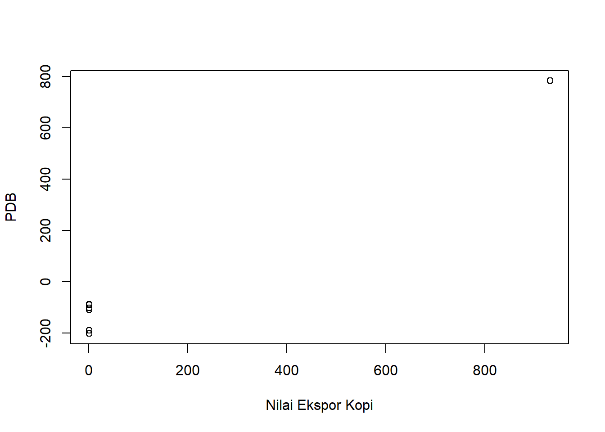
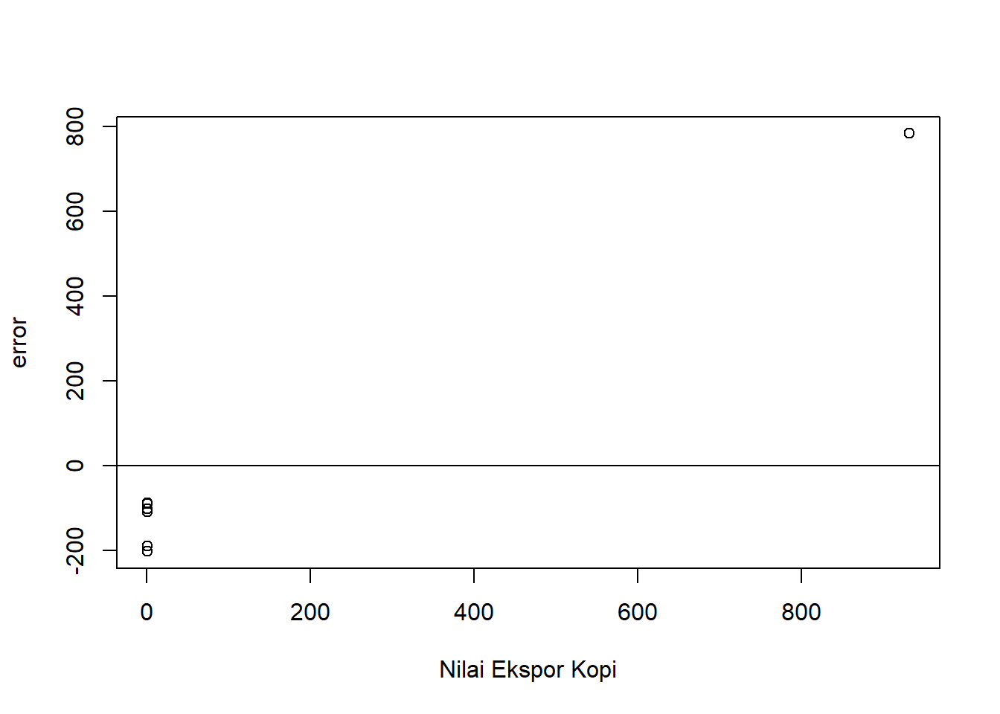
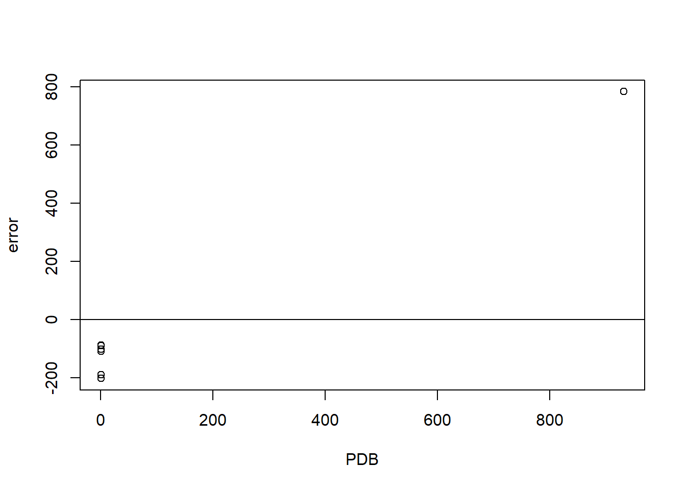

library(readxl)
library(WDI) Pengaruh Nilai Ekspor Kopi Terhadap Produk Domestik Bruto Tahun 2016-2022
Metode Penelitian Politeknik APP Jakarta

1 Pendahuluan
1.1 Latar belakang
Sektor pertanian, kehutanan, dan perikanan sangat penting bagi ekonomi Indonesia. Potensinya untuk meningkatkan kontribusi perekonomian nasional sangat besar, terutama dalam sub sektor perkebunan yang sangat besar.
Kopi sebagai minuman bermanfaat untuk kesegaran dan kesahatan tubuh merupakan salah satu komoditi Perkebunan yang mempunyai peran strategis dalam perekonomian di Indonesia. Kopi juga salah satu komoditas ekspor Indonesia yang cukup penting sebagai sumber penghasil devisa negara. Kopi memiliki nilai ekspor rata-rata pertumbuhan sebesar 9,84% terbesar keempat setelah karet,minyak sawit dan kelapa.
Kopi asli Indonesia memiliki keunggulan global karena ragam varietas, kualitas, dan rasanya yang luas. Ragaman varietas kopi Indonesia ini memiliki citra rasa yang unik yang dihasilkan oleh berbagai faktor, seperti lokasi penanaman kopi, iklim tropis Indonesia, kesuburan tanah, dan faktor perawatan perkebunan kopi. Kopi asli Indonesia memiliki potensi yang sangat besar untuk bersaing di pasar internasional. Peningkatan nilai ekspor kopi dapat memberikan kontribusi positif terhadap Produk Domestik Bruto (PDB) Indonesia. Ini karena ekspor kopi dapat meningkatkan penerimaan devisa negara dan mendukung pertumbuhan sektor pertanian khususnya di sub sektor Perkebunan serta industri pengolahan kopi di dalam negeri. Ekspor kopi yang meningkat akan membawa masuk lebih banyak dolar ke Indonesia sebagai penerimaan devisa. Dolar ini kemudian dapat dikonversi ke dalam Rupiah, meningkatkan suplai mata uang asing di pasar domestik.
1.2 Ruang lingkup
Dalam penelitian ini penulis mengambil objek penelitian dari Badan Pusat Statistik dan World Development Indicators. Ruang lingkup penelitian ini terdapat 2 variabel antara lain nilai ekspor keseluruhan kopi Indonesia dan nilai Produk Domestik Bruto Indonesia. Data yang digunakan adalah data yang bersifat time series yaitu dalam kurun waktu 2016-2022 dengan satuan USD untuk nilai ekspor kopi dan satuan IDR yang telah diubah ke USD untuk Produk Domestik Bruto, karena untuk memudahkan penyetaraan mata uang secara internasional, data inilah yang kemudian menjadi objek penelitian.
1.3 Rumusan masalah
- Apakah nilai ekspor kopi berpengaruh pada PDB Indonesia?
- Bagaimana hubungan nilai ekspor terhadap PDB ?
1.4 Tujuan dan manfaat penelitian
Berdasarkan latar belakang dan permasalahan yang ada maka tujuan dari penelitian ini adalah untuk mengetahui pengaruh nilai ekspor kopi terhadap PDB dan mengetahui hubungan nilai ekspor kopi terhadap PDB Indonesia serta kontribusi sektor perkebunan, khususnya subsektor kopi, terhadap perekonomian Indonesia.
Manfaat penelitian ini agar Masyarakat mengerti bahwa nilai ekspor kopi dan kontribusi subsektor perkebunan kopi di pasar internasional sangat berpengaruh terhadap kontribusi peningkatan devisa negara dan PDB Indonesia.
1.5 Package
Ini tidak wajib ada di tulisan anda tapi anda dapat menunjukkan Packages yang digunakan antara lain sebagai berikut:
2 Studi pustaka
- Ekspor
Ekspor adalah kegiatan mengirimkan barang atau jasa dari suatu negara ke negara lain dengan tujuan untuk dijual atau digunakan di negara tujuan tersebut. Dalam konteks ekonomi, ekspor merupakan salah satu komponen perdagangan internasional dan menjadi bagian penting dalam hubungan ekonomi antarnegara, serta dapat menambah devisa negara.
- Produk Domestik Produk (PDB)
Produk Domestik Bruto (PDB) adalah ukuran total nilai semua barang dan jasa yang dihasilkan dalam batas wilayah suatu negara selama periode waktu tertentu. PDB digunakan sebagai indikator utama untuk mengukur perekonomian suatu negara.
- Pertumbuhan ekonomi
Pertumbuhan ekonomi merupakan perubahan positif dalam produksi atau output ekonomi suatu negara selama periode waktu tertentu. Pertumbuhan ekonomi dapat diukur dengan melihat perubahan PDB dari satu periode ke periode lainnya.
- Pertumbuhan ekonomi menggunakan PDB
Jika PDB suatu negara meningkat dari satu tahun ke tahun berikutnya, itu menunjukkan adanya pertumbuhan ekonomi positif. Sebaliknya, jika PDB mengalami penurunan, dapat dianggap sebagai tanda perlambatan ekonomi atau resesi.
- Nilai ekspor
Nilai ekspor mengacu pada total nilai dari barang dan jasa yang dijual atau dikirimkan oleh suatu negara ke negara lain dalam periode waktu tertentu. Ini mencakup semua barang dan jasa yang diperdagangkan oleh suatu negara dengan mitra dagangnya. Nilai ekspor dihitung dalam mata uang domestik negara pengekspor dan mencakup berbagai jenis produk, mulai dari barang manufaktur hingga komoditas dan jasa. Nilai ekspor merupakan salah satu indikator utama dalam neraca perdagangan suatu negara dan memainkan peran penting dalam ekonomi global.
3 Metode penelitian
Data
Berikut adalah data yang digunakan sebagai objek penelitian, data dibawah ini merupakan data nilai ekspor kopi dan PDB Indonesia dengan satuan USD.
| Tahun | Nilai Ekspor Kopi (X) | PDB (Y) dalam triliun |
|---|---|---|
| 2016 | 1.008.549 | 931,88 |
| 2017 | 1.187.157 | 1,02 |
| 2018 | 815.933 | 1,04 |
| 2019 | 883.123 | 1,12 |
| 2020 | 821.932 | 1,06 |
| 2021 | 858.558 | 1,19 |
| 2022 | 1.148.383 | 1,32 |
Penelitian ini menggunakan data sekunder dengan bentuk data time series 20016-2022, data yang dipakai ialah data yang telah diolah dengan sumber Badan Pusat Statistik dan World Development Indicators.
library(readxl)
setwd("C:/Users/ASUS/Downloads/Metopel/UAS METOPEN")
dat<-read_excel('data kopi pdb indonesia.xlsx')
reg1<-lm(Y~X,data=dat)
dat$u<-resid(reg1)
plot(dat$Y,dat$u,xlab="Nilai Ekspor Kopi",ylab="PDB")
Plot X terhadap Y
library(readxl)
dat$u<-resid(reg1)
plot(dat$Y,dat$u,xlab="Nilai Ekspor Kopi",ylab="error")
abline(h=0)
Plot pengaruh error terhadap Nilai Ekspor Kopi
library(readxl)
dat$u<-resid(reg1)
plot(dat$Y,dat$u,xlab="PDB",ylab="error")
abline(h=0)
Plot pengaruh error terhadap PDB
3.1 Metode analisis
Metode yang dipilih adalah regresi univariat atau Ordinary Least Square (OLS) dengan 1 variabel independen. Penelitian ini bermaksud mencari hubungan antara Nilai Ekspor Kopi dan Produk Domestik Bruto (PDB) . Spesifikasi yang dilakukan adalah:
\[ y_{t}=\beta_0 + \beta_1 x_t+\mu_t \] di mana \(y_t\) adalah PDB dan \(x_t\) adalah Nilai Ekspor Kopi.
4 Pembahasan
4.1 Pembahasan masalah
| Variable | Coefficient | Std.Error | t-value | Prob (.) |
|---|---|---|---|---|
| Intercept | -1.613e+02 | 9.723e+02 | -0.166 | 0.875 |
| X | 3.075e-04 | 1.001e-03 | 0.307 | 0.771 |
| R squared | 0.01853 | |||
| Adjusted R-Squared | -0.1778 | |||
| F- Statistic | 0.09437 | |||
| Prob(F-statistic) | 0.7711 |
Hasil regresi yang diperoleh dimasukkan ke dalam persamaan rumus, sehingga rumusnya menjadi :
\(Y = (-1.613e+02) + 3.075e-04X\)
4.2 Analisis masalah
Hasil regresinya adalah
library(readxl)
dat<-read_excel('data kopi pdb indonesia.xlsx')
reg1<-lm(Y~X,data=dat)
summary(reg1)
Call:
lm(formula = Y ~ X, data = dat)
Residuals:
1 2 3 4 5 6 7
783.02 -202.76 -88.59 -109.17 -90.41 -101.55 -190.54
Coefficients:
Estimate Std. Error t value Pr(>|t|)
(Intercept) -1.613e+02 9.723e+02 -0.166 0.875
X 3.075e-04 1.001e-03 0.307 0.771
Residual standard error: 381.8 on 5 degrees of freedom
Multiple R-squared: 0.01853, Adjusted R-squared: -0.1778
F-statistic: 0.09437 on 1 and 5 DF, p-value: 0.77115 Kesimpulan
Berdasarkan hasil penelitian yang dilakukan melalui sistem regresi univariat atau Ordinary Least Square (OLS), dapat disimpulkan bahwa Nilai Ekspor Kopi berpengaruh terhadap Produk Domestik Bruto (PDB) di Indonesia di tahun 2016-2022. Dari hasil regresi, menunjukkan bahwa setiap kenaikan Nilai Ekspor Kopi pada Produk Domestik Bruto (PDB) sebesar 1 memberikan dampak positif berupa kenaikan sebesar 0.0003075. Namun, nilai koefisien yang sangat kecil 0.0003075 menandakan bahwa pengaruhnya mungkin tidak terlalu berpengaruh secara praktis pada tahun 2016-2022.
Dengan demikian, dapat dikatakan bahwa kegiatan ekspor kopi yang dilakukan memungkinkan pengaruh baik, namun tidak terlalu besar terhadap Produk Domestik Bruto (PDB) di tahun terkait.
6 Referensi
Badan Pusat Statistik Indonesia. (26 Desember 2017). Statistik Kopi Indonesia 2016. Diakses pada 20 Januari 2024, dari https://www.bps.go.id/id/publication/2017/12/26/342431c17fb726e7f1f52322/statistik-kopi-indonesia-2016.html
Badan Pusat Statistik Indonesia. (20 Desember 2018). Statistik Kopi Indonesia 2017. Diakses pada 20 Januari 2024, dari https://www.bps.go.id/id/publication/2018/12/20/71e7ada61b13e59be0b1bf80/statistik-kopi-indonesia-2017.html
Badan Pusat Statistik Indonesia. (6 Desember 2019). Statistik Kopi Indonesia 2018. Diakses pada 20 Januari 2024, dari https://www.bps.go.id/id/publication/2019/12/06/b5e163624c20870bb3d6443a/statistik-kopi-indonesia-2018.html
Badan Pusat Statistik Indonesia. (2 Desember 2020). Statistik Kopi Indonesia 2019. Diakses pada 20 Januari 2024, dari https://www.bps.go.id/id/publication/2020/12/02/de27ead7c1c7e29fd0aa950d/statistik-kopi-indonesia-2019.html
Badan Pusat Statistik Indonesia. (30 November 2021). Statistik Kopi Indonesia 2020. Diakses pada 20 Januari 2024, dari https://www.bps.go.id/id/publication/2021/11/30/b1b6cf2a6aad1ee2d8a4c656/statistik-kopi-indonesia-2020.html
Badan Pusat Statistik Indonesia. (30 November 2022). Statistik Kopi Indonesia 2021. Diakses pada 20 Januari 2024, dari https://www.bps.go.id/id/publication/2022/11/30/bb965eef3b3c7bbb8e70e9de/statistik-kopi-indonesia-2021.html
Badan Pusat Statistik Indonesia. (30 November 2023). Statistik Kopi Indonesia 2022. Diakses pada 20 Januari 2024, dari https://www.bps.go.id/id/publication/2023/11/30/abde293e6c0fc5d45aaa9fe8/statistik-kopi-indonesia-2022.html
World Development Indicators